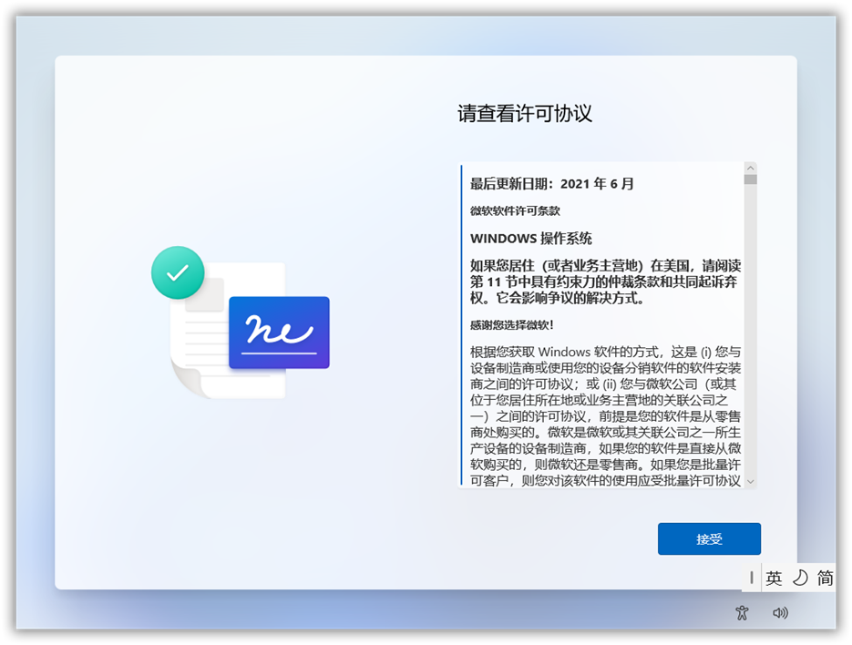
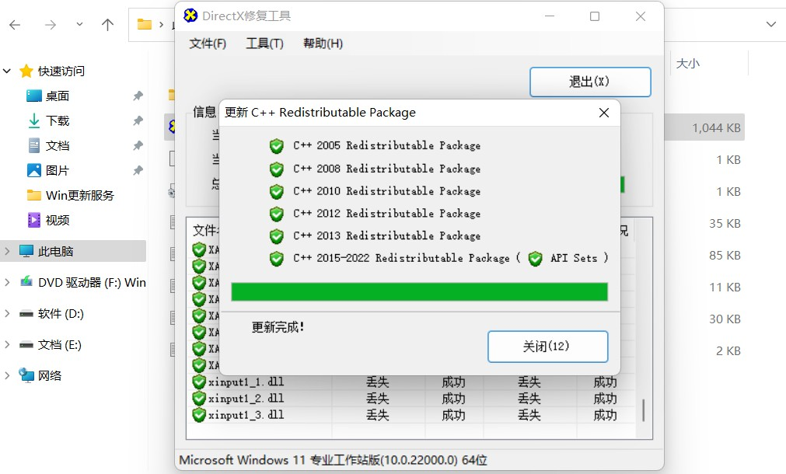
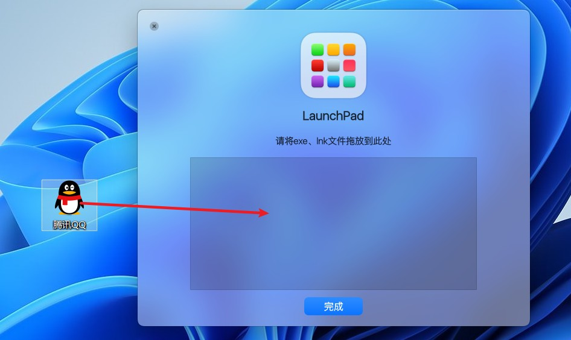

随着Windows系统的更新，就有了一些新的需求。比如怎么缩短重装系统的时间，怎么激活Windows，怎么关闭Windows Defender，怎么关闭Windows系统更新，怎么修复丢失的dll文件，怎么解除被占用的文件，怎么去除桌面快捷方式的小箭头，怎么保证系统的上网安全等。
软件推荐
1、Windows镜像一键改造
GitHub： https://github.com/cxyqiyue/Windows/tree/main
蓝奏云： https://wwz.lanzoum.com/iT0vB0co5pli
推荐蓝奏云下载
优点：脚本一键运行，省下大量时间
GitHub图示
1、进入网站
2、解压缩包，打开文件夹

3、看使用说明

4、将ISO拖入 Source_ISO 文件夹内
并右键以管理员身份运行 Windows镜像一键改造 By cxyqiyue.cmd 脚本文件
5、根据选项输入数字，推荐 3 或 7

6、此处以Win11为例

7、说明
8、改造完成的ISO

9、给本地账户添加密码


蓝奏云图示
1、进入网站
2、解压缩包，打开文件夹
3、看使用说明
4、将ISO拖入 Source_ISO 文件夹内
并右键以管理员身份运行 Windows镜像一键改造 By cxyqiyue.cmd 脚本文件
5、根据选项输入数字，推荐 3 或 7
6、此处以Win11为例
7、说明
8、改造完成的ISO
9、给本地账户添加密码
不用此脚本重装系统需要的操作





2、系统激活
HEU KMS Activator下载：
地址1： https://wwi.lanzoup.com/b05gumbe
密码：9xum
地址2： https://www.123pan.com/s/xY3DVv-375HA
地址3： https://github.com/zbezj/HEU_KMS_Activator/releases
解压密码：HEU168
优点：方便快捷
图示
1、进入网站

2、下载

3、关闭Windows实时保护


4、解压缩包，打开文件夹

5、运行文件

6、是

7、开始

8、结束

3、关闭Windows Defender
下载链接： https://wwz.lanzoum.com/idgCH0cjmp8h
优点：可随关随开
图示
1、进入网站

2、需要关闭实时保护，不然会如图

3、关闭实时保护


4、解压缩包，运行软件

5、如图，选择你需要的

6、移除

7、继续执行

8、运行中

9、重新启动电脑

10、查看结果


4、关闭Windows系统更新
下载链接： https://wwz.lanzoum.com/iWZH40cjmp9i
优点：可随关随开
图示
1、进入网站
2、解压缩，打开文件夹
3、运行文件
4、禁用更新
5、查看结果

5、桌面快捷方式去小箭头
下载链接： https://wwz.lanzoum.com/imyh20cjmpaj
密码：d0hu
图示
1、进入网站

2、右键以管理员身份运行此文件


3、按任意键关闭

6、DirectX
下载链接： https://pan.baidu.com/s/136myaeFowYAwQRmDaiNd8w?pwd=1234
提取码：1234
修复缺失的dll文件
图示
1、进入网站
2、右键以管理员身份运行此文件
3、修复

7、Iobit Unlocker
下载链接： https://pan.baidu.com/s/1gxN2t5_BHEmW86VO9sGMGQ?pwd=1234
提取码：1234
优点：再也不用为文件占用而烦恼了
图示
1、进入网站

2、安装文件


3、运行文件

4、解除占用


8、虚拟机
下载链接： https://pan.baidu.com/s/1rJuqKgnhTP2h0xlWEaPysg?pwd=1234
提取码：1234
优点：安装好后随便造，不影响主系统
下载安装
1、进入网站
2、解压缩包
3、安装
安装虚拟机
1、打开主界面
2、创建新虚拟机

3、创建完成，进行配置

4、启动虚拟机
5、选择版本

6、选择安装位置
7、安装VMware Tools
8、虚拟机安装完成
9、任务栏显示隐藏
下载链接： https://wwz.lanzoum.com/iVJiC0cjm34b
图示
1、进入网站
2、解压缩，打开文件夹
3、运行软件
4、右下角显示图标
5、图标上右键设置
6、如图
7、快捷键
10、MyDockFinder
下载链接： https://wwz.lanzoum.com/b03valx0j
密码：2dn2
在Windows中体验Mac风格，配合上面的任务栏显示隐藏效果更佳
共有 MyDock、MyFinder 和 MyDockFinder（前两个整合在一起） 三个选择，按你需要下载
图示
MyDock
MyFinder
1、进入网站，这里以 MyDockFinder 为例
2、下载
3、解压缩，打开文件夹
4、运行文件
5、效果如图
6、MyDock 栏空白处右键设置偏好
7、设置偏好
8、添加图标

9、将快捷方式拖入
